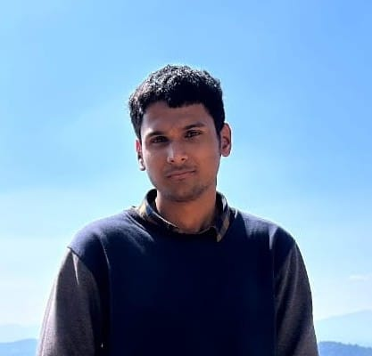

Founder
Current Students
Shoaib Ahamed
M.S @ IIT Bombay (2024–)
Fault Attacks
Aritra Belel
M.Tech @ IIT Bombay (2024–)
Covert & Side-Channel Attacks
N. K. Vishwajit
B.Tech @ IIT Bombay (2023–)
Side-Channel Analysis
Enanko Basak
M.S @ IIT Bombay (2025–)
Micro-architectural Security

Siddhesh Shinde
M.S @ IIT Bombay (2025–)
Side-Channel Analysis
Pushpendra Pal
PhD @ IIT Bombay (2026–)
Fault Attacks
Shashi kant
PhD @ IIT Bombay (2026–)
Side-Channel Attacks
Previous Students
- Khushang Singla — B.Tech @ IIT Bombay (2021–25)
- Mrityunjay Shukla — PhD @ IIT Bombay (2024–)